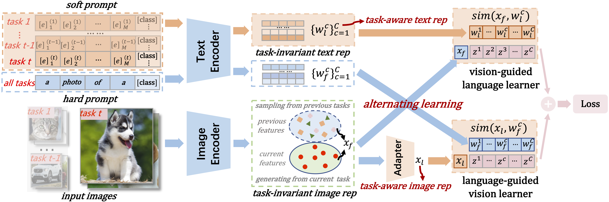
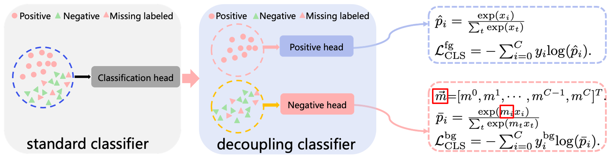
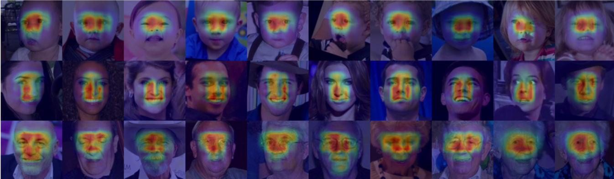
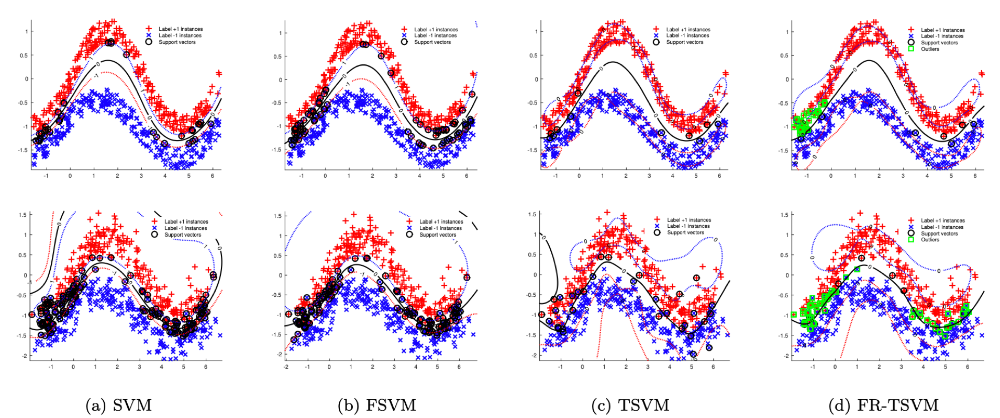

<!--
<div class="paper" id="AAAI2024">
  
  <div> <strong>Learning Task-Aware Language-Image Representation for Class-Incremental Object Detection</strong><br>
  Hongquan Zhang*, <strong>Bin-Bin Gao*</strong>, Yi Zeng, Xudong Tian, Xin Tan<sup>+</sup>, Zhizhong Zhang, Yanyun Qu, Jun Liu and Yuan Xie<br>
  <i>In: Proceedings of the Thirty-Eighth AAAI Conference on Artificial Intelligence </i> (<strong>AAAI 2024</strong>), Vancouver, Canada, Feb 2024, pp.7096--7104.<br>
  [ <a href="https://doi.org/10.1609/aaai.v38i7.28537">Paper</a>  ] 
  [ <a href="javascript:toggleabs('AAAI2024')">Abstrcat</a> ]
  <preabs style="display: none;">
    Class-incremental object detection (CIOD) is a real-world desired capability, requiring an object detector to continuously adapt to new tasks without forgetting learned ones, with the main challenge being catastrophic forgetting. Many methods based on distillation and replay have been proposed to alleviate this problem. However, they typically learn on a pure visual backbone, neglecting the powerful representation capabilities of textual cues, which to some extent limits their performance. 
    In this paper, we propose task-aware language-image representation to mitigate catastrophic forgetting, introducing a new paradigm for language-image-based CIOD.
    First of all, we demonstrate the significant advantage of language-image detectors in mitigating catastrophic forgetting. Secondly, we propose a learning task-aware language-image representation method that overcomes the existing drawback of directly utilizing the language-image
    detector for CIOD. More specifically, we learn the language-image representation of different tasks through an insulating approach in the training stage, while using the alignment scores produced by task-specific language-image representation in the inference stage. 
    Through our proposed method, language-image detectors can be more practical for CIOD. We conduct extensive experiments on COCO 2017 and Pascal VOC 2007 and demonstrate that the proposed method achieves state-of-the-art results under the various CIOD settings.    
  </preabs>
  [ <a href="javascript:togglebib('AAAI2024')">BibTeX</a> ]
  <pre style="display: none;">@inproceedings{zhang2024learning,
    title={Learning Task-Aware Language-Image Representation for Class-Incremental Object Detection},
    author={Zhang, Hongquan and Gao, Bin-Bin and Zeng, Yi and Tian, Xudong and Tan, Xin and Zhang, Zhizhong and Qu, Yanyun and Liu, Jun and Xie, Yuan},
    booktitle={Proceedings of the AAAI Conference on Artificial Intelligence},
    volume={38},
    number={7},
    pages={7096--7104},
    year={2024}
  }
  </pre>
  [<a href="https://www.ccf.org.cn/Academic_Evaluation/AI/">CCF-A</a>]
  <br>
  </div>
  <div class="spanner"></div>
  </div>

<div class="paper" id="TMM2023">
  <div> <strong>Cross-Modal Alternating Learning with Task-Aware Representations for Continual Learning</strong> 
  <br>Wujin Li*, <strong>Bin-Bin Gao*<sup>+</sup></strong>, Bizhong Xia, Jinbao Wang, Jun Liu, Yong Liu, Chengjie Wang and Feng Zheng<br>
  <i> IEEE Transactions on Multimedia</i> (<strong>TMM 2023</strong>), 2023.<br>
  [ <a href="https://ieeexplore.ieee.org/document/10347466">Paper</a> ] 
  [ <a href="javascript:toggleabs('TMM2023')">Abstrcat</a> ]
  <preabs style="display: none;">
    Continual learning is a research field of artificial neural networks to simulate human lifelong learning ability. 
    Although a surge of investigations has achieved considerable performance, most rely only on image modality for 
    incremental image recognition tasks. In this paper, we propose a novel yet effective framework coined cross-modal 
    Alternating Learning with Task-Aware representations (ALTA) to make good use of visual and linguistic modal 
    information and achieve more effective continual learning. To do so, ALTA presents a cross-modal joint learning 
    mechanism that leverages simultaneous learning of image and text representations to provide more effective supervision. 
    And it mitigates forgetting by endowing task-aware representations with continual learning capability. Concurrently, 
    considering the dilemma of stability and plasticity, ALTA proposes a cross-modal alternating learning strategy that 
    alternately learns the task-aware cross-modal representations to match the image-text pairs between tasks better, 
    further enhancing the ability of continual learning. We conduct extensive experiments under various popular image 
    classification benchmarks to demonstrate that our approach achieves state-of-the-art performance. At the same time, 
    systematic ablation studies and visualization analyses validate the effectiveness and rationality of our method. 
    Our code will be available upon publication.
  </preabs>      
  [ <a href="javascript:togglebib('TMM2023')">BibTeX</a> ]
  <pre style="display: none;">@inproceedings{alta,
    title={Cross-Modal Alternating Learning with Task-Aware Representations for Continual Learning},
    author={Li, Wujin Li and Gao, Bin-Bin and Xia, Bizhong and Wang, Jinbao  and Liu, Jun and Liu, Yong and Wang, Chengjie and Zheng, Feng},
    journal={IEEE Transactions on Multimedia (TMM 2023)},
    volume={},
    number={},
    pages={},
    doi={},
    year={2023}
  }  
  </pre>
  [ <a href="https://github.com/vijaylee/ALTA">Code</a> ]
  [<a href="https://www.letpub.com.cn/index.php?page=journalapp&view=detail&journalid=3404">SCI1</a>, <a href="https://www.ccf.org.cn/Academic_Evaluation/AI/">CCF-B</a>]
  <br>
  </div>
  <div class="spanner"></div>
  </div>


<div class="paper" id="PR2023">
  <div> <strong>How to Reduce Change Detection to Semantic Segmentation</strong>
  <br>Guo-Hua Wang, <strong>Bin-Bin Gao<sup>+</sup></strong> and Chengjie Wang<br>
  <i> Pattern Recognition</i> (<strong>PR 2023</strong>), 2023.<br>
  [ <a href="https://arxiv.org/pdf/2206.07557.pdf">Paper</a> ] 
  [ <a href="javascript:toggleabs('PR2023')">Abstrcat</a> ]
  <preabs style="display: none;">
    Change detection (CD) aims to identify changes that occur in an image pair taken different times.
    Prior methods devise specific networks from scratch to predict change masks in pixel-level, and 
    struggle with general segmentation problems. In this paper, we propose a new paradigm that reduces 
    CD to semantic segmentation which means tailoring an existing and powerful semantic segmentation 
    network to solve CD. This new paradigm conveniently enjoys the mainstream semantic segmentation 
    techniques to deal with general segmentation problems in CD. Hence we can concentrate on studying 
    how to detect changes. We propose a novel and importance insight that different change types exist 
    in CD and they should be learned separately. Based on it, we devise a module named MTF to extract 
    the change information and fuse temporal features. MTF enjoys high interpretability and reveals the 
    essential characteristic of CD. And most segmentation networks can be adapted to solve the CD problems 
    with our MTF module. Finally, we propose C-3PO, a network to detect changes at pixel-level. C-3PO achieves 
    state-of-the-art performance without bells and whistles. It is simple but effective and can be considered 
    as a new baseline in this field. Our code will be available.
  </preabs>      
  [ <a href="javascript:togglebib('PR2023')">BibTeX</a> ]
  <pre style="display: none;">@inproceedings{wangc3po,
    title={How to Reduce Change Detection to Semantic Segmentation},
    author={Wang, Guo-Hua, and Gao, Bin-Bin and Wang, Chengjie},
    journal={Pattern Recognition (PR 2023)},
    volume={138},
    pages={109384},
    doi={https://doi.org/10.1016/j.patcog.2023.109384}},
    year={2023}
  }
  </pre>
  [ <a href="https://github.com/DoctorKey/C-3PO">Code</a> ]
  [<a href="https://www.letpub.com.cn/index.php?journalid=6515&page=journalapp&view=detail">SCI1</a>, <a href="https://www.ccf.org.cn/Academic_Evaluation/AI/">CCF-B</a>]
  <br>
  </div>
  <div class="spanner"></div>
  </div>


<div class="paper" id="NCA2023">
  <div> <strong>Jointly learning distribution and expectation in a unified frameworkfor facial age and attractiveness estimation</strong>
  <br> <strong>Bin-Bin Gao<sup>+</sup></strong><br>
  <i> Neural Computing and Applications </i> (<strong>NCA 2023</strong>),35:15583–15599, 2023.<br>
  [ <a href="https://doi.org/10.1007/s00521-023-08563-4">Paper</a> ] 
  [ <a href="javascript:toggleabs('NCA2023')">Abstrcat</a> ]
  <preabs style="display: none;">
  Label distribution learning achieved promising results on ordinal regression tasks such as facial age and attractivenessestimation, 
  especially using deep label distribution learning (DLDL) methods, introducing the label distribution learninginto deep convolutional 
  neural networks. However, existing DLDL methods have an inconsistency between the trainingobjectives and the evaluation metric, so 
  they may be suboptimal. In addition, these methods always adopt image classi-fication or face recognition models with a large amount 
  of parameters, which carry expensive computation cost and storageoverhead. In this paper, we firstly analyze the essential 
  relationship between two state-of-the-art methods (ranking CNNand DLDL) and show that the ranking method is in fact learning label 
  distribution implicitly. This result thus firstly unifiestwo existing popular state-of-the-art methods into the DLDL framework. 
  Second, in order to alleviate the inconsistency andreduce resource consumption, we design a lightweight network architecture and 
  propose a unified framework which canjointly learn label distribution and regress expectation value. The effectiveness of our 
  approach has been demonstrated ontypical ordinal regression tasks including facial age and attractiveness estimation. Our method 
  achieves new state-of-the-artresults using the single model with 369 fewer parameters and 39 faster inference speed. 
  </preabs>      
  [ <a href="javascript:togglebib('NCA2023')">BibTeX</a> ]
  <pre style="display: none;">@article{gao2023jointly,
    title={Jointly learning distribution and expectation in a unified framework for facial age and attractiveness estimation},
    author={Gao, Bin-Bin},
    journal={Neural Computing and Applications (NCA 2033)},
    volume={35},
    number={21},
    pages={15583--15599},
    doi={https://doi.org/10.1007/s00521-023-08563-4},
    year={2023}
  }
  </pre>
  [<a href="https://www.letpub.com.cn/index.php?page=journalapp&view=detail&journalid=6123">SCI3</a>, <a href="https://www.ccf.org.cn/Academic_Evaluation/AI/">CCF-C</a>]
  <br>
  </div>
  <div class="spanner"></div>
  </div>


<div class="paper" id="NeurIPS2022">
  <div> <strong>Decoupling Classifier for Boosting Few-shot Object Detection and Instance Segmentation</strong>
  <br><strong>Bin-Bin Gao<sup>+</sup></strong>, Xiaochen Chen, Zhongyi Huang, Congchong Nie, Jun Liu, Jinxiang Lai, Guannan Jiang, Xi Wang and Chengjie Wang<sup>+</sup><br>
  <i>In: Thirty-sixth Conference on Neural Information Processing Systems</i> (<strong>NeurIPS 2022</strong>), New Orleans, USA, from Nov 29th to Dec 1st, 2022, pp.18640-18652.<br>
  [ <a href="https://nips.cc/virtual/2022/poster/55372">Paper</a> ] 
  [ <a href="https://csgaobb.github.io/Projects/DCFS">ProjectPage</a> ]
  [ <a href="javascript:toggleabs('NeurIPS2022')">Abstrcat</a> ]
  <preabs style="display: none;">
    This paper focus on few-shot object detection~(FSOD) and instance segmentation~(FSIS), which
    requires a model to quickly adapt to novel classes with a few labeled instances. The existing
    methods severely suffer from bias classification because of the missing label issue which naturally
    exists in a few-shot scenario and is first formally proposed by us. Our analysis suggests that
    the standard classification head of most FSOD or FSIS models needs to be decoupled to mitigate
    the bias classification. Therefore, we propose an embarrassingly simple but effective method
    that decouples the standard classifier into two heads. Then, these two individual heads are
    capable of independently addressing clear positive samples and noisy negative samples which
    are caused by the missing label. In this way, the model can effectively learn novel classes
    while mitigating the effects of noisy negative samples. Without bells and whistles, our model
    without any additional computation cost and parameters consistently outperforms its baseline
    and state-of-the-art by a large margin on PASCAL VOC and MS-COCO benchmarks for FSOD and FSIS tasks.
    The code will be available.
  </preabs>      
  [ <a href="javascript:togglebib('NeurIPS2022')">BibTeX</a> ]
  <pre style="display: none;">@inproceedings{gao2022dc,
    title={Decoupling Classifier for Boosting Few-shot Object Detection and Instance Segmentation},
    author={Gao, Bin-Bin and Chen, Xiaochen and Huang, Zhongyi and Nie, Congchong and Liu, Jun and Lai, Jinxiang and Jiang, Guannan and Wang, Xi and Wang, Chengjie},
    booktitle={Thirty-sixth Conference on Neural Information Processing Systems (NeurIPS 2022)},
    volume={35},
    pages={18640--18652},
    year={2022}
  }  
  </pre>
  [ <a href="https://openreview.net/attachment?id=dVXO3Orjmxk&name=supplementary_material">Supplementary Material</a>]
  [ <a href="https://nips.cc/media/neurips-2022/Slides/55372_kHEysnz.pdf">Slides</a>]
  [ <a href="https://nips.cc/media/PosterPDFs/NeurIPS%202022/5b69b9cb83065d403869739ae7f0995e.png">Poster</a>]
  [ <a href="https://csgaobb.github.io/Projects/mscoco-fsod.html">FSOD-Leaderboard</a> ]
  [ <a href="https://github.com/gaobb/DCFS">Code</a> ]
  [<a href="https://www.ccf.org.cn/Academic_Evaluation/AI/">CCF-A</a>]
  <br>
  </div>
  <div class="spanner"></div>
  </div>


<div class="paper" id="APANet">

<div> <strong>APANet: Adaptive Prototypes Alignment Network for Few-Shot Semantic Segmentation</strong><br>
Jiacheng Chen*, <strong>Bin-Bin Gao*<sup>+</sup></strong>, Zongqing Lu<sup>+</sup>, Jing-Hao Xue, Chengjie Wang and Qingmin Liao<br>
<i>IEEE Transactions on Multimedia</i> (<strong>TMM 2022</strong>),25:4361-4373, 2022.<br>
[ <a href="https://ieeexplore.ieee.org/document/9773019">Paper</a>  ]
[ <a href="javascript:toggleabs('APANet')">Abstrcat</a> ]
<preabs style="display: none;">
Few-shot semantic segmentation aims to segment novel-class objects in a given query image with only a few labeled support images. 
Most advanced solutions exploit a metric learning framework that performs segmentation through matching each query feature to a 
learned class-specific prototype. However, this framework suffers from biased classification due to incomplete feature comparisons. 
To address this issue, we present an adaptive prototype representation by introducing class-specific and class-agnostic prototypes 
and thus construct complete sample pairs for learning semantic alignment with query features. The complementary features learning 
manner effectively enriches feature comparison and helps yield an unbiased segmentation model in the few-shot setting. It is 
implemented with a two-branch end-to-end network (\ie, a class-specific branch and a class-agnostic branch), which generates 
prototypes and then combines query features to perform comparisons. In addition, the proposed class-agnostic branch is simple 
yet effective. In practice, it can adaptively generate multiple class-agnostic prototypes for query images and learn feature 
alignment in a self-contrastive manner. Extensive experiments on PASCAL-5i and COCO-20i demonstrate the superiority of our method. 
At no expense of inference efficiency, our model achieves state-of-the-art results in both 1-shot and 5-shot settings for semantic segmentation.
</preabs>
[ <a href="javascript:togglebib('APANet')">BibTeX</a> ]
<pre style="display: none;">@ARTICLE{APANet_TMM_2022,
  author={Chen, Jiacheng and Gao, Bin-Bin and Lu, Zongqing and Xue, Jing-Hao and Wang, Chengjie and Liao, Qingmin},
  journal={IEEE Transactions on Multimedia}, 
  title={APANet: Adaptive Prototypes Alignment Network for Few-Shot Semantic Segmentation}, 
  year={2022},
  volume={25},
  pages={4361-4373},
  doi={10.1109/TMM.2022.3174405}}
</pre>
[<a href="https://www.letpub.com.cn/index.php?page=journalapp&view=detail&journalid=3404">SCI1</a>, <a href="https://www.ccf.org.cn/Academic_Evaluation/AI/">CCF-B</a>]
<br>
</div>
<div class="spanner"></div>
</div>

<div class="paper" id="MCAR">

<div> <strong>Learning to Discover Multi-Class Attentional Regions for Multi-Label Image Recognition</strong><br>
<strong>Bin-Bin Gao<sup>+</sup></strong> and Hong-Yu Zhou<br>
<i>IEEE Transactions on Image Processing </i> (<strong>TIP 2021</strong>),20:5920-5932,2021.</i><br>
[ <a href="https://ieeexplore.ieee.org/document/9466402">Paper</a>  ]
[ <a href="javascript:toggleabs('MCAR')">Abstrcat</a> ]
<preabs style="display: none;">
Multi-label image recognition is a practical and challenging task compared to single-label image classification.
However, previous works may be suboptimal because of a great number of object proposals or complex attentional 
region generation modules. In this paper, we propose a simple but efficient two-stream framework to recognize
multi-category objects from global image to local regions, similar to how human beings perceive objects. 
To bridge the gap between global and local streams, we propose a multi-class attentional region module which 
aims to make the number of attentional regions as small as possible and keep the diversity of these regions as 
high as possible. Our method can efficiently and effectively recognize multi-class objects with an affordable 
computation cost and a parameter-free region localization module. Over three benchmarks on multi-label image 
classification, we create new state-of-the-art results with a single model only using image semantics without 
label dependency. In addition, the effectiveness of the proposed method is extensively demonstrated under different 
factors such as global pooling strategy, input size and network architecture.
Code has been made available at~\url{https://github.com/gaobb/MCAR}. 
</preabs>
[ <a href="javascript:togglebib('MCAR')">BibTeX</a> ]
<pre style="display: none;">@ARTICLE{MCAR_TIP_2021,
         author = {Bin-Bin Gao and Hong-Yu Zhou},
         title = {{Learning to Discover Multi-Class Attentional Regions for Multi-Label Image Recognition}},
         booktitle = {IEEE Transactions on Image Processing (TIP)},
         year={2021},
         volume={30},
         pages={5920-5932},
}
</pre>
[ <a href="https://github.com/gaobb/MCAR">Code</a> ]
[<a href="https://www.letpub.com.cn/index.php?journalid=3390&page=journalapp&view=detail">SCI1</a>, <a href="https://www.ccf.org.cn/Academic_Evaluation/AI/">CCF-A</a>]
<br>
</div>
<div class="spanner"></div>
</div>


  <div class="paper" id="IJCAI2018">
    <div> <strong>Age Estimation Using Expectation of Label Distribution Learning</strong><br>
    <strong>Bin-Bin Gao</strong>, Hong-Yu Zhou, Jianxin Wu<sup>+</sup> and Xin Geng<br>
    <i>In: Proceedings of the 27th International Joint Conference on Artificial Intelligence</i> (<strong>IJCAI 2018</strong>), Stockholm, Sweden, July 2018, pp.712-718.<br>
    [ <a href="https://www.ijcai.org/proceedings/2018/0099.pdf">Paper</a>  ] 
    [ <a href="./Projects/DLDL-v2.html">Project Page</a>  ]
    [ <a href="javascript:toggleabs('IJCAI2018')">Abstrcat</a> ]
    <preabs style="display: none;">
    Age estimation performance has been greatly improved by using convolutional neural network. 
    However, existing methods have an inconsistency between the training objectives and evaluation metric, 
    so they may be suboptimal. In addition, these methods always adopt image classification or face recognition 
    models with a large amount of parameters which bring expensive computation cost and storage overhead. 
    To alleviate these issues, we design a light network architecture and propose a unified framework which 
    can jointly learn age distribution and regress age. The effectiveness of our approach has been demonstrated 
    on apparent and real age estimation tasks. Our method achieves new state-of-the-art results using the single
    model with 36$\times$ fewer parameters and 2.6$\times$ reduction in inference time. Moreover, our method 
    can achieve comparable results as the state-of-the-art even though model parameters are further reduced to 
    0.9M~(3.8MB disk storage). We also analyze that Ranking methods are implicitly learning label distributions.
    </preabs>      
    [ <a href="javascript:togglebib('IJCAI2018')">BibTeX</a> ]
    <pre style="display: none;">@inproceedings{gaoDLDLv2,
               title={Age Estimation Using Expectation of Label Distribution Learning},
               author={Gao, Bin-Bin and Zhou, Hong-Yu and Wu, Jianxin and Geng, Xin},
               booktitle={Proceedings of the 27th International Joint Conference on Artificial Intelligence (<strong>IJCAI 2018</strong>)},
               pages={712--718},
               year={2018}
                }
    
    </pre>
   
   [<a href="https://github.com/gaobb/DLDL-v2">Code</a>]

    [<a href="https://www.ccf.org.cn/Academic_Evaluation/AI/">CCF-A</a>]
    <br>
    </div>
    <div class="spanner"></div>
    </div>
    

<div class="paper" id="TIP17">
  
  <div> <strong>Deep Label Distribution Learning with Label Ambiguity</strong><br>
  <strong>Bin-Bin Gao</strong>, Chao Xing, Chen-Wei Xie, Jianxin Wu<sup>+</sup> and Xin Geng <br>
  <i>IEEE Transactions on Image Processing </i> (<strong>TIP 2017</strong>), 26(6):2825-2838,2017.<br>
  [ <a href="./Pub_files/TIP2017_DLDL.pdf">Paper</a>  ] 
  [ <a href="./Projects/DLDL.html">Project Page</a>  ]
  [ <a href="javascript:toggleabs('TIP17')">Abstrcat</a> ]
  <preabs style="display: none;">
  Convolutional Neural Networks (ConvNets) have achieved excellent recognition performance in various visual recognition tasks. 
  A large labeled training set is one of the most important factors for its success. However, it is difficult to collect sufficient 
  training images with precise labels in some domains such as apparent age estimation, head pose estimation, multi-label 
  classification and semantic segmentation. Fortunately, there is ambiguous information among labels, which makes these tasks 
  different from traditional classification. Based on this observation, we convert the label of each image into a discrete label 
  distribution, and learn the label distribution by minimizing a Kullback-Leibler divergence between the predicted and ground-truth 
  label distributions using deep ConvNets. The proposed DLDL (Deep Label Distribution Learning) method effectively utilizes the 
  label ambiguity in both feature learning and classifier learning, which prevents the network from over-fitting even when the 
  training set is small. Experimental results show that the proposed approach produces significantly better results than state-of-the-art 
  methods for age estimation and head pose estimation. At the same time, it also improves recognition performance for multi-label 
  classification and semantic segmentation tasks.
  </preabs>      
  [ <a href="javascript:togglebib('TIP17')">BibTeX</a> ]
  <pre style="display: none;">@ARTICLE{gao2016deep,
           author={Gao, Bin-Bin and Xing, Chao and Xie, Chen-Wei and Wu, Jianxin and Geng, Xin},
           title={Deep Label Distribution Learning with Label Ambiguity},
           journal={IEEE Transactions on Image Processing},
           year={2017},
           volume={26},
           number={6},
           pages={2825-2838}, 
           }
  </pre>
  [<a href="https://github.com/gaobb/DLDL">Code</a> ]
  [<a href="https://www.letpub.com.cn/index.php?journalid=3390&page=journalapp&view=detail">SCI1</a>, <a href="https://www.ccf.org.cn/Academic_Evaluation/AI/">CCF-A</a>]
  <br>
  </div>
  <div class="spanner"></div>
  </div>
  </div>
  </div>


<div class="paper" id="SSI2018">
  <a href="http://engine.scichina.com/publisher/scp/journal/SSI/doi/10.1360/N112017-00216?slug=abstract">
  
  </a>
  <div> <strong>Resource Constrained Deep Learning: Challenges and Practices (in Chinese)</strong><br>
  Jianxin Wu<sup>+</sup>, <strong>Bin-Bin Gao</strong>, Xiu-Shen Wei and Jian-Hao Luo<br>
  <i>SCIENTIA SINICA Informatics</i>, 48(5):501-510,2018.<br>
  [ <a href="http://engine.scichina.com/publisher/scp/journal/SSI/doi/10.1360/N112017-00216?slug=abstract">Paper</a>  ] 
  [ <a href="javascript:toggleabs('SSI2018')">Abstrcat</a> ]
  <preabs style="display: none;">
  Deep learning has made significant progresses in recent years. However, deep models require a lot of
  computation-related resources, and its learning process needs huge number of data points and their labels. Hence,
  one current research focus in deep learning is to reduce its resource consumptions, i.e., resource constrained deep
  learning. In this paper, we first analyze deep learning’s thirsts for the various types of resources and the challenges
  they lead to, then briefly introduce research progresses from three aspects: data, label and computation resources.
  And we give detailed introductions of these areas using our research results as examples.
  </preabs>      
  [ <a href="javascript:togglebib('SSI2018')">BibTeX</a> ]
  <pre style="display: none;">@inproceedings{SSI2018,
              title={Resource constrained deep learning: Challenges and practices},
              author={Wu, Jianxin and Gao, Bin-Bin and Wei, Xiu-Shen and Luo, Jian-Hao},
              journal={SCIENTIA SINICA Informatics},
              volume={48},
              number={5},
              pages={501--510},
              year={2018}
              }
  </pre>
  <br>
  </div>
  <div class="spanner"></div>
  </div>


<div class="paper" id="AAAI2016">
  
  <div> <strong>Representing Sets of Instances for Visual Recognition</strong><br>
  Jianxin Wu<sup>+</sup>, <strong>Bin-Bin Gao</strong> and Guoqing Liu <br>
  <i>In: Proceedings of the Thirtieth AAAI Conference on Artificial Intelligence </i>(<strong>AAAI 2016</strong>), Phoenix, Arizona, USA, Feb 2016, pp.2237-2243.<br>
  [ <a href="http://cs.nju.edu.cn/_upload/tpl/00/ed/237/template237/paper/AAAI2016_D3.pdf">Paper</a>  ] 
  [ <a href="javascript:toggleabs('AAAI2016')">Abstrcat</a> ]
  <preabs style="display: none;">
  In computer vision, a complex entity such as an image or
  video is often represented as a set of instance vectors, which
  are extracted from different parts of that entity. Thus, it is
  essential to design a representation to encode information
  in a set of instances robustly. Existing methods such as FV
  and VLAD are designed based on a generative perspective,
  and their performances fluctuate when difference types of instance
  vectors are used (i.e., they are not robust). The proposed
  D3 method effectively compares two sets as two distributions,
  and proposes a directional total variation distance
  (DTVD) to measure their dissimilarity. Furthermore, a robust
  classifier-based method is proposed to estimate DTVD robustly,
  and to efficiently represent these sets. D3 is evaluated
  in action and image recognition tasks. It achieves excellent
  robustness, accuracy and speed.
  </preabs>
  [ <a href="javascript:togglebib('AAAI2016')">BibTeX</a> ]
  <pre style="display: none;">@inproceedings{wu2016representing,
    title={Representing Sets of Instances for Visual Recognition.},
    author={Wu, Jianxin and Gao, Bin-Bin and Liu, Guoqing},
    booktitle={Proceedings of the theritieth AAAI Conference on Artificial Intelligence},
    pages={2237--2243},
    year={2016}
  }
  </pre>
  [<a href="https://www.ccf.org.cn/Academic_Evaluation/AI/">CCF-A</a>]
  <br>
  </div>
  <div class="spanner"></div>
  </div>


<div class="paper" id="IJCNN2021">
  <div> <strong>A Coarse-to-Fine Instance Segmentation Network with Learning Boundary Representation</strong>
  <br>Feng Luo, <strong>Bin-Bin Gao+</strong>, Jiangpeng Yan and Xiu Li<br>
  <i>In: Proceedings of International Joint Conference on Neural Networks (<strong>IJCNN 2021</strong>), Shenzhen, China, July 18-22, 2021, pp.1-8. </i><br>
  [ <a href="https://ieeexplore.ieee.org/abstract/document/9533399">Paper</a>  ] 
  [ <a href="javascript:toggleabs('IJCNN2021')">Abstrcat</a> ]
  <preabs style="display: none;">
    Boundary-based instance segmentation has drawn
    much attention since of its attractive efficiency. However, existing
    methods suffer from the difficulty in long-distance regression.
    In this paper, we propose a coarse-to-fine module to address
    the problem. Approximate boundary points are generated at the
    coarse stage and then features of these points are sampled and
    fed to a refined regressor for fine prediction. It is end-to-end
    trainable since differential sampling operation is well supported
    in the module. Furthermore, we design a holistic boundary-aware
    branch and introduce instance-agnostic supervision to assist
    regression. Equipped with ResNet-101, our approach achieves
    31.7% mask AP on COCO dataset with single-scale training and
    testing, outperforming the baseline 1.3% mask AP with less than
    1% additional parameters and GFLOPs. Experiments also show
    that our proposed method achieves competitive performance
    compared to existing boundary-based methods with a lightweight design and a simple pipeline.
  </preabs>      
  [ <a href="javascript:togglebib('IJCNN2021')">BibTeX</a> ]
  <pre style="display: none;">@inproceedings{luo2021coarse,
    title={A Coarse-to-Fine Instance Segmentation Network with Learning Boundary Representation},
    author={Luo, Feng and Gao, Bin-Bin and Yan, Jiangpeng and Li, Xiu},
    booktitle={International Joint Conference on Neural Networks (IJCNN)},
    pages={1--8},
    year={2021}
  }  
  </pre>
  <br>
  </div>
  <div class="spanner"></div>
  </div>


<div style="clear: both;">
<div class="section">
<h2 id="confpapers">Arxiv papers</h2>


<div class="paper" id="DLDLv2-journal">

<div> <strong>Learning Expectation of Label Distribution for Facial Age and Attractiveness Estimation</strong><br>
<strong>Bin-Bin Gao</strong>, Xin-Xin Liu,Hong-Yu Zhou,Jianxin Wu,Xin Geng<br>
<i>arXiv:2007.01771, 2020. </i><br>
[ <a href="https://arxiv.org/pdf/2007.01771.pdf">Paper</a>  ]
[ <a href="javascript:toggleabs('DLDLv2-journal')">Abstrcat</a> ]
<preabs style="display: none;">
Facial attributes (e.g., age and attractiveness) estimation performance has been greatly improved by using convolutional neural networks. However, existing methods have an inconsistency between the training objectives and the evaluation metric, so they may be suboptimal. In addition, these methods always adopt image classification or face recognition models with a large amount of parameters, which carry expensive computation cost and storage overhead. In this paper, we firstly analyze the essential relationship between two state-of-the-art methods (Ranking-CNN and DLDL) and show that the Ranking method is in fact learning label distribution implicitly. This result thus firstly unifies two existing popular state-of-the-art methods into the DLDL framework. Second, in order to alleviate the inconsistency and reduce resource consumption, we design a lightweight network architecture and propose a unified framework which can jointly learn facial attribute distribution and regress attribute value. The effectiveness of our approach has been demonstrated on both facial age and attractiveness estimation tasks. Our method achieves new state-of-the-art results using the single model with 36×(6×) fewer parameters and 2.6×(2.1×) faster inference speed on facial age (attractiveness) estimation. Moreover, our method can achieve comparable results as the state-of-the-art even though the number of parameters is further reduced to 0.9M (3.8MB disk storage).
</preabs>
[ <a href="javascript:togglebib('DLDLv2-journal')">BibTeX</a> ]
<pre style="display: none;">@article{}
</pre>
<br>
</div>
<div class="spanner"></div>
</div>


<div class="paper" id="DSP">

<div> <strong>Deep Spatial Pyramid: The Devil is Once Again in the Details</strong><br>
<strong>Bin-Bin Gao</strong>, Xiu-Shen Wei, Jianxin Wu, Weiyao Lin<br>
<i>arXiv:1504.05277v2, 2015. </i><br>
[ <a href="https://arxiv.org/pdf/1504.05277v2.pdf">Paper</a>  ]
[ <a href="https://github.com/gaobb/DSP">Code</a> ]
[ <a href="javascript:toggleabs('DSP')">Abstrcat</a> ]
<preabs style="display: none;">
In this paper we show that by carefully making good
choices for various detailed but important factors in a visual
recognition framework using deep learning features,
one can achieve a simple, efficient, yet highly accurate image
classification system. We first list 5 important factors,
based on both existing researches and ideas proposed in this
paper. These important detailed factors include: 1) `2 matrix
normalization is more effective than unnormalized or `2
vector normalization, 2) the proposed natural deep spatial
pyramid is very effective, and 3) a very small K in Fisher
Vectors surprisingly achieves higher accuracy than normally
used large K values. Along with other choices (convolutional
activations and multiple scales), the proposed
DSP framework is not only intuitive and efficient, but also
achieves excellent classification accuracy on many benchmark
datasets. For example, DSP’s accuracy on SUN397 is
59.78%, significantly higher than previous state-of-the-art
(53.86%).
</preabs>
[ <a href="javascript:togglebib('DSP')">BibTeX</a> ]
<pre style="display: none;">@article{GaoDSP15,
  author    = {Gao, Bin-Bin and Wei, Xiu-Shen and Wu, Jianxin and Lin Weiyao},
  title     = {Deep Spatial Pyramid: The Devil is Once Again in the Details},
  journal   = {CoRR},
  volume    = {abs/1504.05277},
  year      = {2015},
  url       = {http://arxiv.org/abs/1504.05277},
}
</pre>
<br>
</div>
<div class="spanner"></div>
</div>
</div>


<div class="paper" id="ICCV17">

<div> <strong>Adaptive Feeding: Achieving Fast and Accurate Detections by Adaptively Combining Object Detectors</strong><br>
Hong-Yu Zhou, <strong>Bin-Bin Gao</strong> and Jianxin Wu+ <br>
<i>In: Proceedings of the IEEE International Conference on Computer Vision </i>(<strong>ICCV 2017</strong>), Venice, Italy, October 2017, pp. 3505-3513.<br>
[ <a href="https://openaccess.thecvf.com/content_ICCV_2017/papers/Zhou_Adaptive_Feeding_Achieving_ICCV_2017_paper.pdf">Paper</a>  ] 
[ <a href="https://funnyzhou.github.io/project/adaptive_feeding/">Project Page</a>  ]
[ <a href="javascript:toggleabs('ICCV17')">Abstrcat</a> ]
<preabs style="display: none;">
Object detection aims at high speed and accuracy simultaneously. However, fast models are usually less accurate, 
while accurate models cannot satisfy our need for speed. A fast model can be 10 times faster but 50% less accurate 
than an accurate model. In this paper, we propose Adaptive Feeding (AF) to combine a fast (but less accurate) detector 
and an accurate (but slow) detector, by adaptively determining whether an image is easy or hard and choosing an appropriate 
detector for it. In practice, we build a cascade of detectors, including the AF classifier which make the easy vs. 
hard decision and the two detectors. The AF classifier can be tuned to obtain different tradeoff between speed and accuracy, 
which has negligible training time and requires no additional training data. Experimental results on the PASCAL VOC, MS COCO 
and Caltech Pedestrian datasets confirm that AF has the ability to achieve comparable speed as the fast detector and comparable 
accuracy as the accurate one at the same time. As an example, by combining the fast SSD300 with the accurate SSD500 detector, 
AF leads to 50% speedup over SSD500 with the same precision on the VOC2007 test set.
</preabs>      
[ <a href="javascript:togglebib('ICCV17')">BibTeX</a> ]
<pre style="display: none;">@inproceedings{zhou2017adaptive,
           title={Adaptive Feeding: Achieving Fast and Accurate Detections by Adaptively Combining Object Detectors},
           author={Zhou, Hong-Yu and Gao, Bin-Bin and Wu, Jianxin},
           booktitle={Proceedings of the IEEE International Conference on Computer Vision (ICCV 2017)},
           pages={3505-3513},
           year={2017}
            }
</pre>
[<a href="https://www.ccf.org.cn/Academic_Evaluation/AI/">CCF-A</a>]
[<a href="https://github.com/funnyzhou/Adaptive_Feeding">Code</a> ]
<br>
</div>
<div class="spanner"></div>
</div>


<div class="paper" id="BMVC17">

<div> <strong>Sunrise or Sunset: Selective Comparison Learning for Subtle Attribute Recognition</strong><br>
Hong-Yu Zhou, <strong>Bin-Bin Gao</strong> and Jianxin Wu+ <br>
<i>In: Proceedings of the 28th British Machine Vision Conference </i>(<strong>BMVC 2017</strong>), London, UK, September 2017.<br>
[ <a href="https://arxiv.org/pdf/1707.06335.pdf">Paper</a>  ] 
[ <a href="https://funnyzhou.github.io/project/sos/">Project Page</a>  ]
[ <a href="javascript:toggleabs('BMVC17')">Abstrcat</a> ]
<preabs style="display: none;">
The difficulty of image recognition has gradually increased from general category recognition to fine-grained recognition 
and to the recognition of some subtle attributes such as temperature and geolocation. In this paper, we try to focus on 
the classification between sunrise and sunset and hope to give a hint about how to tell the difference in subtle attributes. 
Sunrise vs. sunset is a difficult recognition task, which is challenging even for humans. Towards understanding this new 
problem, we first collect a new dataset made up of over one hundred webcams from different places. Since existing algorithmic 
methods have poor accuracy, we propose a new pairwise learning strategy to learn features from selective pairs of images. 
Experiments show that our approach surpasses baseline methods by a large margin and achieves better results even compared with humans. 
We also apply our approach to existing subtle attribute recognition problems, such as temperature estimation, and 
achieve state-of-the-art results.
</preabs>      
[ <a href="javascript:togglebib('BMVC17')">BibTeX</a> ]
<pre style="display: none;">@inproceedings{zhou2017sunrise,
            title={Sunrise or Sunset: Selective Comparison Learning for Subtle Attribute Recognition},
            author={Zhou, Hong-Yu and Gao, Bin-Bin and Wu, Jianxin},
            booktitle={Proceedings of the 28th British Machine Vision Conference (BMVC 2017)},
            year={2017}
            }
</pre>
[<a href="https://www.ccf.org.cn/Academic_Evaluation/AI/">CCF-C</a>]
<br>
</div>
<div class="spanner"></div>
</div>


<div class="paper" id="CVPR16">

<div> <strong>Exploit Bounding Box Annotations for Multi-label Object Recognition</strong><br>
Hao Yang, Joey Tiany Zhou, Yu Zhang, <strong>Bin-Bin Gao</strong>, Jianxin Wu+ and Jianfei Cai<br>
<i>In: Proceedings of the IEEE Conference on Computer Vision and Pattern Recognition </i>(<strong>CVPR 2016</strong>), Las Vegas, NV, USA, June 2016, pp.280-288.<br>
[ <a href="http://www.cv-foundation.org/openaccess/content_cvpr_2016/papers/Yang_Exploit_Bounding_Box_CVPR_2016_paper.pdf">Paper</a>  ]
[ <a href="javascript:toggleabs('CVPR16')">Abstrcat</a> ]
<preabs style="display: none;">
Convolutional neural networks (CNNs) have shown
great performance as general feature representations for
object recognition applications. However, for multi-label
images that contain multiple objects from different categories,
scales and locations, global CNN features are not
optimal. In this paper, we incorporate local information
to enhance the feature discriminative power. In particular,
we first extract object proposals from each image. With
each image treated as a bag and object proposals extracted
from it treated as instances, we transform the multi-label
recognition problem into a multi-class multi-instance learning
problem. Then, in addition to extracting the typical
CNN feature representation from each proposal, we propose
to make use of ground-truth bounding box annotations
(strong labels) to add another level of local information
by using nearest-neighbor relationships of local regions to
form a multi-view pipeline. The proposed multi-view multiinstance
framework utilizes both weak and strong labels
effectively, and more importantly it has the generalization
ability to even boost the performance of unseen categories
by partial strong labels from other categories. Our framework
is extensively compared with state-of-the-art handcrafted
feature based methods and CNN based methods on
two multi-label benchmark datasets. The experimental results
validate the discriminative power and the generalization
ability of the proposed framework. With strong labels,
our framework is able to achieve state-of-the-art results in
both datasets.
</preabs>
[ <a href="javascript:togglebib('CVPR16')">BibTeX</a> ]
<pre style="display: none;">@inproceedings{yang2016exploit,
  title={Exploit bounding box annotations for multi-label object recognition},
  author={Yang, Hao and Zhou, Joey Tianyi and Zhang, Yu and Gao, Bin-Bin and Wu, Jianxin and Cai, Jianfei},
  booktitle={Proceedings of the IEEE Conference on Computer Vision and Pattern Recognition},
  pages={280--288},
  year={2016}
}
</pre>
[<a href="https://www.ccf.org.cn/Academic_Evaluation/AI/">CCF-A</a>]
<br>
</div>
<div class="spanner"></div>
</div>


<div class="paper" id="ICCV15_AGE">

<div> <strong>Deep Label Distribution Learning for Apparent Age Estimation </strong><br>
Xu Yang, <strong>Bin-Bin Gao</strong>, Chao Xing, Zeng-Wei Huo, Xiu-Shen Wei, Ying Zhou, Jianxin Wu+ and Xin Geng <br>
<i>In: Proceedings of the IEEE ICCV’15 ChaLearn Looking at People workshop </i>(<strong>ICCVW 2015</strong>), Santiago, Chile, Dec 2015, pp.102-108.<br>
[ <a href="./Pub_files/iccvw15_AGE.pdf">Paper</a>  ]  
[ <a href="./Pub_files/iccvw15_AGE_slide.pdf">Slides</a> ] 
[ <a href="javascript:toggleabs('ICCV15_AGE')">Abstrcat</a> ]
<preabs style="display: none;">
In the age estimation competition organized by
ChaLearn, apparent ages of images are provided. Uncertainty
of each apparent age is induced because each image
is labeled by multiple individuals. Such uncertainty makes
this age estimation task different from common chronological
age estimation tasks. In this paper, we propose a
method using deep CNN (Convolutional Neural Network)
with distribution-based loss functions. Using distributions
as the training tasks can exploit the uncertainty induced by
manual labeling to learn a better model than using ages as
the target. To the best of our knowledge, this is one of the
first attempts to use the distribution as the target of deep
learning. In our method, two kinds of deep CNN models are
built with different architectures. After pre-training each
deep CNN model with different datasets as one corresponding
stream, the competition dataset is then used to fine-tune
both deep CNN models. Moreover, we fuse the results of
two streams as the final predicted ages. In the final testing
dataset provided by competition, the age estimation performance
of our method is 0.3057, which is significantly better
than the human-level performance (0.34) provided by the
competition organizers.
</preabs>
[ <a href="javascript:togglebib('ICCV15_AGE')">BibTeX</a> ]
<pre style="display: none;">@inproceedings{yang2015deep,
  title={Deep label distribution learning for apparent age estimation},
  author={Yang, Xu and Gao, Bin-Bin and Xing, Chao and Huo, Zeng-Wei and Wei, Xiu-Shen and Zhou, Ying and Wu, Jianxin and Geng, Xin},
  booktitle={Proceedings of the IEEE International Conference on Computer Vision Workshops},
  pages={102--108},
  year={2015}
}
</pre>
<br>
</div>
<div class="spanner"></div>
</div>

<div class="paper" id="ICCV15_CER">

<div> <strong>Deep Spatial Pyramid Ensemble for Cultural Event  Recognition</strong><br>
Xiu-Shen Wei, <strong>Bin-Bin Gao</strong> and Jianxin Wu+<br>
<i>In: Proceedings of the IEEE ICCV’15 ChaLearn Looking at People workshop </i>(<strong>ICCVW 2015</strong>), Santiago, Chile, Dec 2015, pp.38-44.<br>
[ <a href="./Pub_files/iccvw15_CER.pdf">Paper</a>  ]  
[ <a href="./Pub_files/iccvw15_CER_slide.pdf">Slides</a> ] 
[ <a href="javascript:toggleabs('ICCV15_CER')">Abstrcat</a> ]
<preabs style="display: none;">
Semantic event recognition based only on image-based
cues is a challenging problem in computer vision. In order
to capture rich information and exploit important cues
like human poses, human garments and scene categories,
we propose the Deep Spatial Pyramid Ensemble framework,
which is mainly based on our previous work, i.e., Deep Spatial
Pyramid (DSP). DSP could build universal and powerful
image representations from CNN models. Specifically,
we employ five deep networks trained on different data
sources to extract five corresponding DSP representations
for event recognition images. For combining the complementary
information from different DSP representations, we
ensemble these features by both “early fusion” and “late
fusion”. Finally, based on the proposed framework, we
come up with a solution for the track of the Cultural Event
Recognition competition at the ChaLearn Looking at People
(LAP) challenge in association with ICCV 2015. Our
framework achieved one of the best cultural event recognition
performance in this challenge.
</preabs>
[ <a href="javascript:togglebib('ICCV15_CER')">BibTeX</a> ]
<pre style="display: none;">@inproceedings{wei2015deep,
  title={Deep spatial pyramid ensemble for cultural event recognition},
  author={Wei, Xiu-Shen and Gao, Bin-Bin and Wu, Jianxin},
  booktitle={Proceedings of the IEEE International Conference on Computer Vision Workshops},
  pages={38--44},
  year={2015}
}
</pre>
<br>
</div>
<div class="spanner"></div>
</div>

<div class="paper" id="ICMLA15">

<div> <strong>Coordinate Descent Fuzzy Twin Support Vector Machine for Classification</strong><br>
<strong>Bin-Bin Gao</strong>, Jian-Jun Wang+, Yao Wang and Chan-Yun Yang<br>
<i>In: Proceedings of the IEEE Conference on Machine Learning and Applications </i>(<strong>ICMLA 2015</strong>), Miami, Florida, USA, Dec 2015, pp.7-12.<br>
[ <a href="./Pub_files/icmla15_FTWSVM.pdf">Paper</a>  ] 
[ <a href="javascript:toggleabs('ICMLA15')">Abstrcat</a> ]
<preabs style="display: none;">
In this paper, we develop a novel coordinate descent
fuzzy twin SVM (CDFTSVM) for classification. The proposed
CDFTSVM not only inherits the advantages of twin SVM but
also leads to a rapid and robust classification results. Specifically,
our CDFTSVM has two distinguished advantages: (1) An effective
fuzzy membership function is produced for removing the noise
incurred by the contaminant inputs. (2) A coordinate descent
strategy with shrinking by active set is used to deal with the
computational complexity brought by the high dimensional input.
In addition, a series of simulation experiments are conducted to
verify the performance of the CDFTSVM, which further supports
our previous claims.
</preabs>
[ <a href="javascript:togglebib('ICMLA15')">BibTeX</a> ]
<pre style="display: none;">@inproceedings{gao2015coordinate,
  title={Coordinate Descent Fuzzy Twin Support Vector Machine for Classification},
  author={Gao, Bin-Bin and Wang, Jian-Jun and Wang, Yao and Yang, Chan-Yun},
  booktitle={Proceedings of the IEEE Conference on Machine Learning and Applications (ICMLA)},
  pages={7-12},
  year={2015},
}
</pre>
[ <a href="https://github.com/gaobb/CDFTSVM">Code</a> ]
<br>
</div>
<div class="spanner"></div>
</div>


<div class="paper" id="KMTSVM">

<div> <strong>Maximum Margin Twin Support Vector Machine for Multi-Class Classification (in Chinese)</strong><br>
<strong>Bin-Bin Gao</strong> and Jian-Jun Wang<br>
<i>Journal of Southwest China Normal University (Natural Science Edition)</i>,10(38):130-135,2013..<br>
[ <a href="./Pub_files/KMTSVM.pdf">Paper</a>  ] 
[ <a href="javascript:toggleabs('KMTSVM')">Abstrcat</a> ]
<preabs style="display: none;">
A novel maximum margin twin support vector machine for multi-class classification (K-MTSVM) is presented in this paper. 
The K-MTSVM takes structural risk minimization principle as the optimization objective to build classification model by
introducing the margin and uses a 1-versus-1-versus-rest structure to train sub-classifiers. The experimental results on 
both artificial and UCI datasets indicate that our K-MTSVM gets better generalization performance.
</preabs>
[ <a href="javascript:togglebib('KMTSVM')">BibTeX</a> ]
<pre style="display: none;">
</pre>
<br>
</div>
<div class="spanner"></div>
</div>


<div class="paper" id="FR-TSVM">

<div> <strong>A Fast and Robust TSVM for Pattern Classification</strong><br>
<strong>Bin-Bin Gao</strong>, Jian-Jun Wang<br>
<i>https://arxiv.org/abs/1711.05406 </i><br>
[ <a href="./Pub_files/FR-TSVM-v2.pdf">Paper</a>  ]
[ <a href="https://github.com/gaobb/FR-TSVM">Code</a> ]
[ <a href="javascript:toggleabs('FR-TSVM')">Abstrcat</a> ]
<preabs style="display: none;">
Twin support vector machine~(TSVM) is a powerful learning algorithm by solving a pair of smaller SVM-type problems. However, there are still some specific issues such as low efficiency and weak robustness when it is faced with some real applications. In this paper, we propose a Fast and Robust TSVM~(FR-TSVM) to deal with the above issues. In order to alleviate the effects of noisy inputs, we propose an effective fuzzy membership function and reformulate the TSVMs such that different input instances can make different contributions to the learning of the separating hyperplanes. To further speed up the training procedure, we develop an efficient coordinate descent algorithm with shirking to solve the involved a pair of quadratic programming problems (QPPs). Moreover, theoretical foundations of the proposed model are analyzed in details. The experimental results on several artificial and benchmark datasets indicate that the FR-TSVM not only obtains a fast learning speed but also shows a robust classification performance. Code has been made available at: <a href="https://github.com/gaobb/FR-TSVM">this url</a>.
</preabs>
[ <a href="javascript:togglebib('FR-TSVM')">BibTeX</a> ]
<pre style="display: none;">@article{GaoFRTSVM17,
  author    = {Gao, Bin-Bin and Wang, Jian-Jun},
  title     = {A Fast and Robust TSVM for Pattern Classification},
  journal   = {CoRR},
  volume    = {abs/1711.05406},
  year      = {2017},
  url       = {http://arxiv.org/abs/1711.05406},
}
</pre>
<br>
</div>
<div class="spanner"></div>
</div>
</div>
</div>
</div>
-->